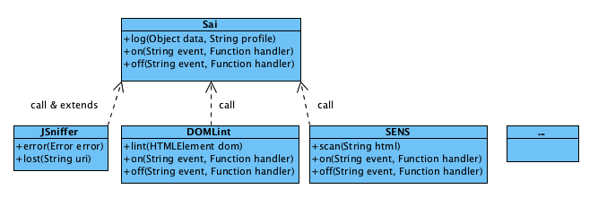

Sai 是《棋魂》中追求神乎其技的魂，千年来他隐身身后，为追求神乎其技孜孜不倦。
概述¶
整体上，前端监控包含很多方面，例如包括：
- JavaScript 异常监控
- 敏感信息监控
- DOM 合法性检查
- 静态资源监控
- 网站监控等
为了更好的扩展性，和结构上的简单清晰，前端监控核心模块提供了基础的数据交换接口。 上层的监控模块负责各自独立的监控逻辑，并通过这个接口传输监控数据。
大致结构如下图：

从上图看，前端监控(Sai 模块)提供了核心的 log() 接口，
和 on(), off() 事件机制，其中 log() 接口提供了可扩展的数据传输方案，
on(), off() 事件机制提供了简单易用的扩展能力。
JSniffer 模块提供了全局的 JavaScript 异常监控支持，并扩展了 error() 方法。
为开发者监控主动捕获的异常做支持。
JSniffer 同时还扩展了 lost() 方法，在外部模块或资源加载失败时调用 lost()
方法，监控到 JavaScript 异常时，附加这些缺失的资源信息，辅助异常分析。
JavaScript 异常是前端监控中最重要、最常用的信息，同时为了简化 API，所以将 这两个接口扩展附加在 Sai 模块上。
其他的 DOMLint, SENS 等第三方独立的监控模块，都直接调用 Sai.log() 接口
传输数据。
安装¶
前端监控脚本拆分为两个部分：
seer.js
小巧的先行脚本建议内联（也可以外联）在页面头部，在所有脚本和外部资源之前。 用于收集全局的异常，并为后续业务准备好可用的 API。
sai.js
后置监控模块（这是一个 CMD 模块）可以通过异步方式加载在页面底部， 用于处理监控日志的发送和其他扩展支持。
<html>
<head>
<meta charset="utf-8" />
<script type="text/javascript" src="dist/seer.js"></script>
</head>
<body>
page content...
<script type="text/javascript">
// 如果没有 file 等协议场景，可以直接使用 `//log.example.com/sai.gif`。
var protocol = String(loc.protocol).toLowerCase();
if(protocol !== "https:"){ protocol = "http:"; }
if (window.Sai) {
Sai.server = protocol + "//log.example.com/sai.gif";
}
seajs.use("sai/3.0.0/sai", function(Sai){
});
</script>
</body>
</html>使用说明¶
一般情况下，JavaScript 异常监控前置脚本已经自动收集了页面上抛出的异常，
但也有部分场景，业务逻辑中 catch 捕获住了抛出 JavaScript 异常，避免影响后续
的业务逻辑，但同时希望监控到这个异常场景，可以主动调用 Sai.error() 接口：
try{
throw new Error("msg");
}catch(ex){
Sai.error(ex);
}API¶
Sai.error(Error error)¶
JavaScript 异常监控的接口，可以用于主动监控被捕获的 JavaScript 异常。
Sai.log(Object seed [, String profile])¶
前端监控的通用频次监控接口。通过这个发送监控数据，并配合对应的日志处理和数据分析， 可以完成多种监控需求。
seed: 详情数据，可以是简单的字符串，或者key: value键值对对象。profile: 日志类型，默认为log。
Sai.on(String eventName, Function handler)¶
监控到特定类型的数据时，会触发的特定事件。内置支持的事件类型包括：
*: 发送所有类型的数据都会触发。jserror: 发送 JavaScript 异常数据前触发。log: 发送自定义 log 监控数据会触发。- 其他任意的自定义类型类似。
Sai.off(String eventName [, Function handler])¶
取消通过 on 绑定的事件。
Sai.lost(String uri)¶
页面加载特定资源失败时，可以调用这个方法。 缺失的资源对于异常分析有较大帮助。
范例：
<script src="sea.js" onerror="window.Sai && Sai.lost && Sai.lost(this.src)"></script>
<script>
// seajs 2.1 开始支持，但 error 事件仍有缺陷，seajs 2.2 的 error 事件较适合本场景。
seajs.on("error", function(module){
window.Sai && Sai.lost && Sai.lost(module.uri);
});
</script>